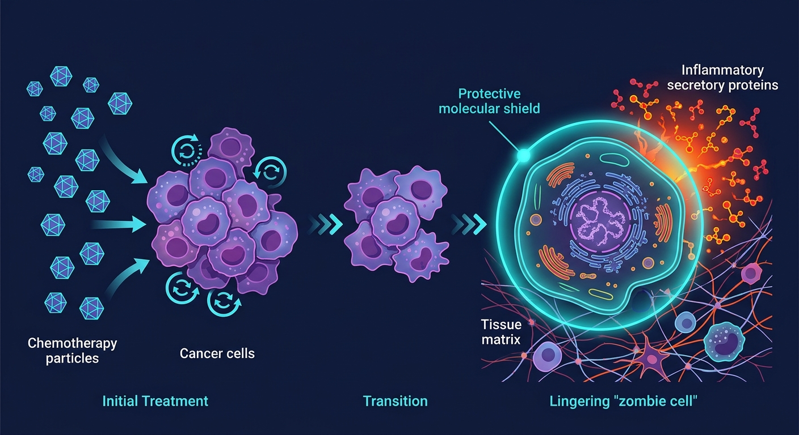

Unlocking a Molecular Trapdoor: How 'Zombie' Cells Develop a Fatal Addiction to Their Own Shields

The cruel paradox of standard cancer therapy lies in what remains after the primary tumor shrinks. While chemotherapy slays millions of rapidly dividing malignant cells, a resilient fraction refuses to die, entering a state of biological suspension known as therapy-induced senescence. These "zombie cells" stop dividing but remain metabolic factories, secreting a cocktail of inflammatory factors that can trigger tumor recurrence and accelerate tissue aging. For years, longevity researchers and oncologists have asked a fundamental question: Why do cells that have suffered such catastrophic damage manage to stay alive, lingering in tissues for months or years?
A groundbreaking study published in Science Advances has unveiled a astonishing molecular plot twist. As cells succumb to therapy-induced senescence, they actually build their own execution scaffolds. The researchers discovered that senescent cells dramatically upregulate death receptors on their surface—specifically Fas and TRAIL-R2/DR5—which assemble intracellular lethal machinery known as the "FADDosome" (a protein complex consisting of RIPK1, FADD, and Caspase-8). Under normal biological conditions, assembling a FADDosome is a definitive death sentence. However, to avoid immediate self-destruction while primed for suicide, senescent cells upregulate a powerful molecular shield: Inhibitor of Apoptosis Proteins, particularly cIAP-2.
This reliance creates what molecular pharmacologists term a precise vulnerability: a state where the cell lives with a cocked weapon pointed directly at itself, held back only by the safety switch of IAPs. By introducing small-molecule IAP antagonists—compounds originally developed to sensitize cancer cells to apoptosis—the researchers effectively stripped away the biological safety switch. Deprived of cIAP protection, the Death Receptors in the senescent cells immediately unleashed the FADDosomes, triggering rapid Caspase-8 activation and forcing the senescent cells into precise suicide. Across both cell models and animal studies, these IAP antagonists acted as potent, highly specific senolytics, clearing persistent cells without inflicting collateral damage on surrounding healthy tissue.
For the fields of biotech translation and longevity medicine, this mechanism represents a dramatic evolution in how we target senescence. Historical senolytic approaches have often relied on broad-spectrum pathway inhibition, which can suffer from inconsistent efficacy and off-target toxicities. Revealing that senescent cells inherently arm their own death pathways—and are perpetually reliant on a narrow set of survival proteins—gives researchers a clear, mechanistic bullseye. Beyond clearing chemotherapy-damaged cells to prevent cancer relapse, this strategy offers a roadmap for targeted senolytic therapies capable of sweeping away damaged biological debris across age-related diseases.
Yet, translating this molecular insight into safe human therapies requires a clear-eyed look at the biological landscape ahead. While IAP antagonists have been explored in clinical oncology, systemic suppression of anti-apoptotic machinery carries significant clinical risks, including off-target systemic inflammation, cytokine release, and potential damage to vital stem cell niches that rely on similar survival signaling. Furthermore, bridging the gap from murine models to human patient populations is notoriously challenging; the baseline expression of death receptors and specific IAP isoforms varies considerably across different human tissues and biological ages. Before biotech platforms can successfully advance IAP-inhibiting senolytics into human trials, rigorous studies will be needed to establish precise biomarker screens and define narrow, controlled therapeutic windows that clear senescent cells without triggering unintended systemic toxicity.
Insights from Longevity KG: Cellular senescence represents a central driver across multiple hallmarks of biological aging, directly contributing to systemic decline and tissue dysfunction such as senescent-induced cognitive decline. While chemical stressors like D-galactose are widely utilized in preclinical research to induce senescence, targeted interventions that block senescence entry (such as Com1–3) or selectively clear persistent senescent cells via senolytics provide vital strategies to inhibit systemic aging. Mapping how IAP antagonists act as potent senolytics deepens our understanding of cellular resilience, linking oncology-induced persistence to broader anti-aging intervention strategies.
Sources & Citations:
Primary Source: Death receptors regulate entry to therapy-induced senescence and orchestrate addiction to IAPs. (Science advances)
- Lafont, E., et al. (2024). Death receptors regulate entry to therapy-induced senescence and orchestrate addiction to IAPs. Science Advances, 10(11), eAED4541. DOI: 10.1126/sciadv.aed4541.